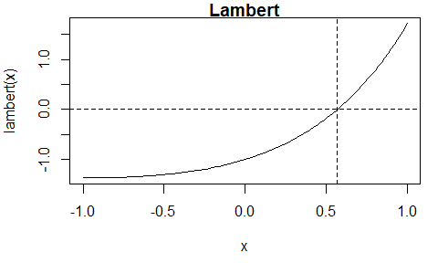

The Interpolate, Truncate, Project (ITP) Root-Finding Algorithm
The itp package implements the Interpolate, Truncate, Project (ITP) root-finding algorithm of Oliveira and Takahashi (2021). Each iteration of the algorithm results in a bracketing interval for the root that is narrower than the previous interval. It’s performance compares favourably with existing methods on both well-behaved functions and ill-behaved functions while retaining the worst-case reliability of the bisection method. For details see the authors’ Kudos summary and the Wikipedia article ITP method.
Examples
We use three examples from Section 3 of Oliveira and Takahashi (2021) to illustrate the use of the itp function. Each of these functions has a root in the interval . The function can be supplied either as an R function or as an external pointer to a C++ function.
A continuous function
The Lambert function is continuous.

The itp function finds an estimate of the root, that is, for which
is (approximately) equal to 0. The algorithm continues until the length of the interval that brackets the root is smaller than
, where
is a user-supplied tolerance. The default is
.
First, we supply an R function that evaluates the Lambert function.
# Lambert, using an R function
lambert <- function(x) x * exp(x) - 1
itp(lambert, c(-1, 1))
#> function: lambert
#> root f(root) iterations
#> 0.5671 2.048e-12 8Now, we create an external pointer to a C++ function that has been provided in the itp package and pass this pointer to the function itp(). For more information see the Overview of the itp package vignette.
# Lambert, using an external pointer to a C++ function
lambert_ptr <- xptr_create("lambert")
itp(lambert_ptr, c(-1, 1))
#> function: lambert_ptr
#> root f(root) iterations
#> 0.5671 2.048e-12 8A discontinuous function
The staircase function is discontinuous.
The itp function finds the discontinuity at at which the sign of the function changes. The value of 0.5 returned for the root
res$root is the midpoint of the bracketing interval [res$a, res$b] at convergence.

Vignette
See vignette("itp-vignette", package = "itp") for an overview of the package.